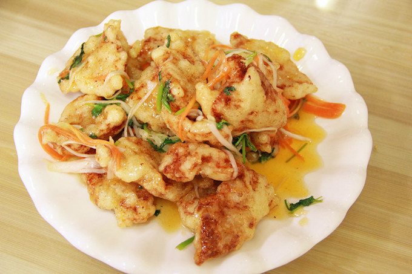

美食之都
烧烤
在东北，没有什么事是一顿烧烤解决不了的，烧烤将当地的风土人情体现的淋漓尽致，豪爽与义气，来东北，来哈尔滨体验舌尖上的烧烤。
锅包肉
谈到正宗的哈尔滨菜肴，岂能错过锅包肉。其实它原本叫“锅爆肉”，因俄罗斯人常把“爆”说成“包”，久而久之便成了“锅包肉”。刚炒好的锅包肉色泽金黄，吃起来外酥里嫩、酸甜可口，是许多游客最难忘的一道哈尔滨美食。
酱骨
酱骨是哈尔滨传统的消夏菜肴，不过现在什么季节都能吃到。分为酱骨架和酱骨棒两种。喜欢吃肉的朋友选酱骨架准没错，想品尝骨髓就吃酱骨棒。最地道的吃法是配上啤酒和花生，谈笑间体会一把哈尔滨人的豪爽
罐虾

罐虾是一道俄罗斯系的菜肴，与红菜汤一样以西红柿做底料，再加上芹菜、胡萝卜等配料焖制成一罐浓郁虾肉。除了罐虾，还有罐牛、罐羊等，都是相同手法烹饪而成的。
马迭尔冰棍
来哈尔滨一定要尝尝马迭尔冰棍，它入口即化、甜而不腻，坚持使用传统工艺制作。也许正是因为百年来味道始终如一，使得它积累了颇高的人气。
格瓦斯
格瓦斯是一种盛行于俄罗斯、乌克兰等东欧国家的饮料，已有一千多年的历史，格瓦斯由面包发酵酿制而成，颜色近似啤酒，是很受大众欢迎的发酵饮料。
秋林里道斯（哈红肠）
哈尔滨红肠，原产于东欧的立陶宛。中东铁路修建后，外国人大量进入哈尔滨，也将红肠工艺带到了哈尔滨。因为肠的外表呈枣红色，所以被哈尔滨人称之为红肠。香辣糯嫩，鲜美可口。
返回→